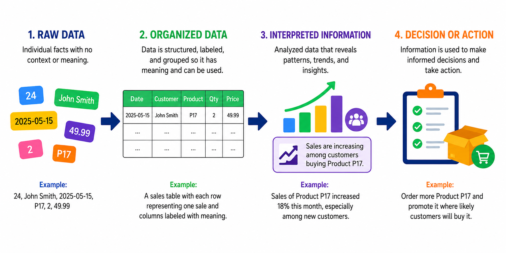
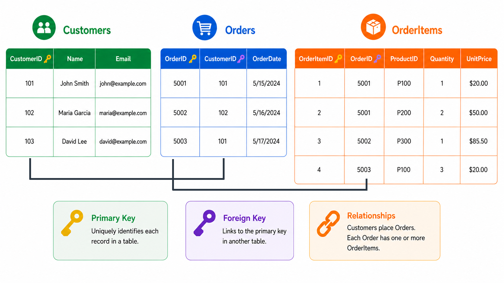

Data vs. Information
Raw Data
Raw data consists of individual facts, such as numbers, names, titles, or dates, that have little meaning on their own. For example, the number 24 could represent an employee’s age, a product quantity, or a price. Labels, units, and relationships provide the context needed to make the data meaningful.
Organized Data
Organized data has been structured, labeled, and grouped so it can be understood and connected to other data. It can then be retrieved, sorted, compared, and analyzed. For example, sales records may be stored in a table where each column has a clear label and each row represents one sale.
Interpreted Information
When organized data is analyzed, it becomes information. Patterns, trends, and relationships can reveal what the data means. For example, an analysis may show that sales are increasing among a particular group of customers.
Decision or Action
Businesses use information to make informed decisions and take effective action. For example, a company may order more of a popular product and place it where likely customers are most likely to buy it. In this way, data supports growth, efficiency, and success.

Comprehension Check 1 of 5
Data Structures
A data structure is a way of organizing data so a system can store, retrieve, update, and process it efficiently. Data may be arranged in lists, arrays, graphs, key-value pairs, tables, or other formats. No single structure is best for every situation; the right choice depends on the type of data and the needs of the system.
A well-designed data structure makes it practical to insert, search, sort, update, retrieve, and delete data. Structured data is often stored in tables with rows, columns, and defined relationships. Semi-structured data, such as JSON, uses labels, keys, and nested elements. Unstructured data may include documents, images, audio, and video.
Choosing a data structure is an important part of system design because it determines how reliably and efficiently data can be transformed into useful information.
Comprehension Check 2 of 5
Databases
A database is an organized collection of data that can be searched, updated, and managed efficiently. It does more than store information—it also helps preserve the data’s structure, relationships, accuracy, and security.
Nearly every modern organization relies on databases. Business applications use them to process transactions, create reports, support decisions, and share reliable information. In this way, information systems transform stored data into useful knowledge for the organization.
Comprehension Check 3 of 5
Relational Database Structure
Relational databases are widely used in business systems. Although they are not the only way to organize data, their core ideas apply to many other data structures, making them a strong place to begin.
A relational database organizes data into connected tables made up of rows and columns. Each table represents a type of entity, such as employees, products, customers, or orders. Each row represents one individual record like one customer, while each column represents an attribute of that record, such as a customer name, email address, or order date.

Primary Key
Each row in a table must be uniquely identifiable. Because two customers may share the same name, names are not reliable identifiers. Instead, each customer is assigned a unique value, such as a CustomerID. This value is the table’s primary key.
Foreign Key
A primary-key value can also appear in another table to create a relationship. For example, the CustomerID from the Customers table may be stored in the Orders table to show which customer placed each order. Because one customer can place many orders, the same CustomerID may appear several times. In the Orders table, it is called a foreign key.
Composite Primary Key
A composite key uses two or more foreign key values together to uniquely identify a row in another table. For example, in an OrderItems table, the combination of OrderID and ProductID can identify each line item, because that pair appears only once for a given order.
Comprehension Check 4 of 5
Maintaining Reliable Data
Reduced Redundancy
Relational databases reduce unnecessary duplication by storing each fact in one appropriate place. If a customer changes an email address, the update is made only in the Customers table rather than in every order record. Reducing redundancy improves consistency, saves storage, and makes data easier to maintain, search, and retrieve.
Referential Integrity
Referential integrity ensures that relationships between tables remain valid. A foreign-key value must match an existing primary-key value in the related table. For example, an order cannot be created for a CustomerID that does not exist.
It also prevents records from becoming disconnected. A customer with existing orders generally cannot be deleted unless those orders are first removed or handled according to a defined database rule. This helps keep the data accurate, consistent, and meaningful.
Comprehension Check 5 of 5
AI in the Information Systems Workplace
Artificial intelligence is has become a part of everyday work in Information Systems. AI tools help professionals search information, summarize documents, write code, identify patterns, prepare reports, and support decisions. However, AI does not eliminate the need to understand the underlying business problem or information system. An AI-generated answer is only useful when it is based on appropriate data, clear requirements, and accurate interpretation. Information Systems professionals work between people, business processes, data, and technology. Their responsibility is to help organizations use AI in ways that improve efficiency, decision-making, service, and accountability.
The future IS professional will often perform hybrid work in which AI handles routine tasks while the human provides context, judgment, communication, and oversight. A data analyst may use AI to suggest calculations, but still needs to determine whether the calculation answers the correct question. A systems analyst may use AI to draft requirements, but must verify that the requirements reflect stakeholder needs. As students begin using AI, they should learn to separate assistance from responsibility. The professional remains accountable for the accuracy, usefulness, security, and ethical consequences of the final result.
Chapter Completion
Answer all five comprehension questions, then check your work.
Chapter complete
Copy or write down this access code. You will need it later in class to receive your points.
data-with-integrity